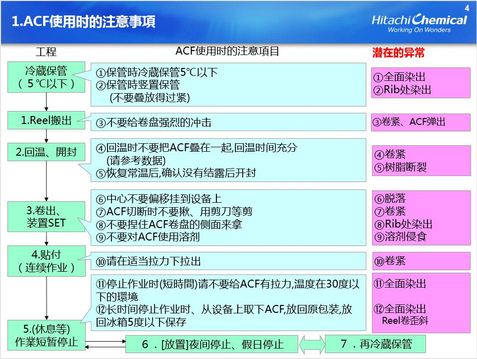
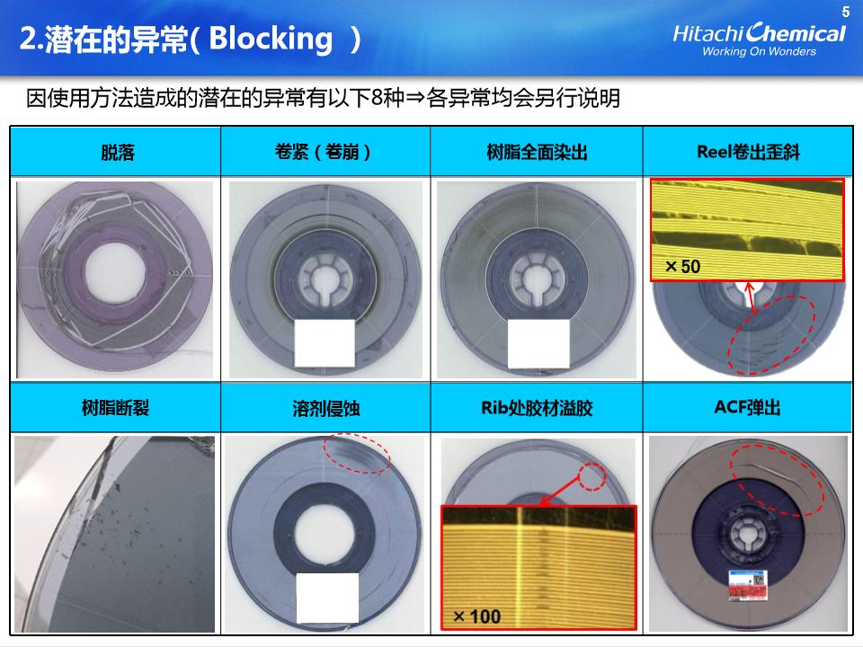
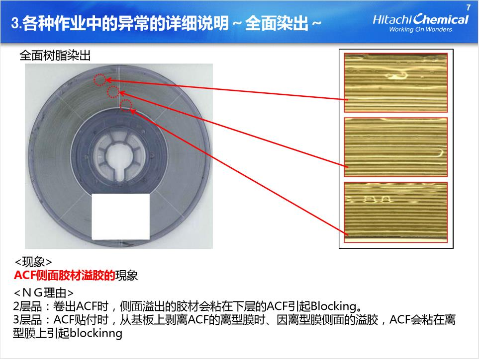
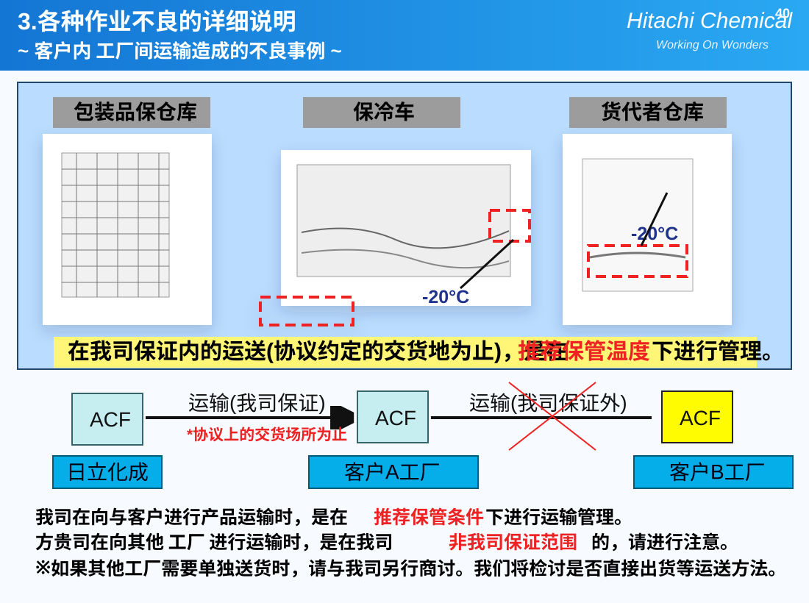

材料回温与裁切
按材料储存要求回温，确认胶宽、卷长、批次和有效期，避免冷凝水影响贴附。
ACF Process
从冷藏回温、裁切预贴，到预压、本压、检测和返修，ACF 使用需要同时控制温度、压力、时间、对位和材料状态。

Before bonding
按材料储存要求回温，确认胶宽、卷长、批次和有效期，避免冷凝水影响贴附。
将 ACF 按对位基准贴附在玻璃、FPC 或目标电极区域，确保平整无褶皱。
先进行临时贴附和初步定位，常见参考范围为 60℃-100℃、2s-10s；实际以规格书和设备条件为准。
搭载部品后完成最终压接和固化，常见参考范围为约 150℃-200℃、10s-20s；需重点检查压痕、溢胶、导通与短路风险。
完成外观、对位、导通电阻、绝缘和可靠性检查。导通异常通常需要回看压力分布、温度曲线、贴附清洁度和材料有效期。
异常返修时配合 ACF 去除液、IC 清洗剂、蓝胶等材料处理残胶，并做好防护、通风和废液管理。
ACF 不是简单贴胶，核心是让导电粒子在 Z 轴方向形成稳定接触，同时保持 XY 平面绝缘。生产现场应重点关注粒子压缩状态、压痕均匀性、热压头状态、硅胶皮老化、FPC 与玻璃电极清洁度。




Ready to quote
联系 黄工，提供结构、型号、胶宽、卷长和应用场景，我们会尽快协助确认。